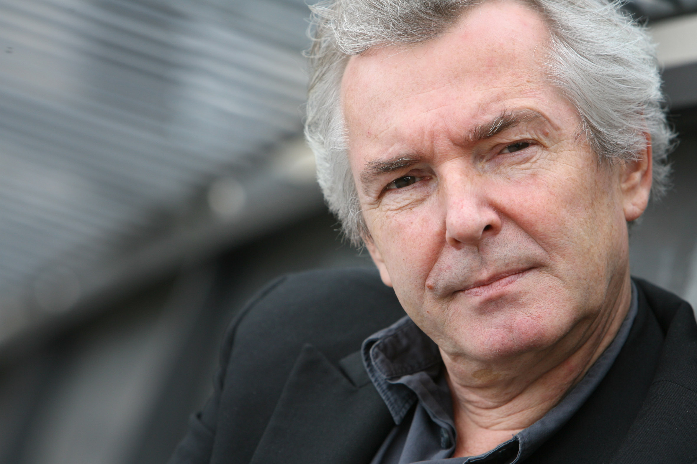

Vita
Ein Leben für das Theater
Geboren 1948 in Neuwied am Rhein. Seit 1979 freischaffender Theatermacher in der Schweiz — Schauspiel, Musik, Produktion und Regie. Werner Bodinek lebt in Oberrohrdorf, Kanton Aargau.
Beitrag an das künstlerische Schaffen 2001
Verliehen vom Kuratorium Aargau, mit folgender Begründung:
Werner Bodinek ist seit über zwanzig Jahren in der freien Schweizer Theaterszene, vorwiegend im Aargau, tätig. Seine Arbeit im Aargau reicht vom Gründungsmitglied des Theaters smomos über die Mitarbeit im Theater M.A.R.I.A und Theater Marie bis zu einer Vielzahl von Eigenproduktionen. Er ist nicht bloss Schauspieler, sondern auch Theatermusiker und Mitautor verschiedenster Stücke. In einigen Produktionen hat er fürs Theater unübliche literarische Texte auf die Bühne gebracht. In Anerkennung seiner vielfältigen Tätigkeit für das Aargauer Theater erhält er vom Aargauer Kuratorium einen Beitrag an das künstlerische Schaffen.
Pro Argovia Honour Artist 2016/17
Ausgezeichnet als Pro Argovia Honour Artist der Spielzeit 2016/17.
Theaterprojekte Bodinek
